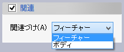
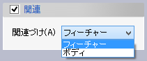
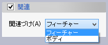

別のソリッドボディを使用して追加、削除、積をとります。
パラメータの入力が整うと作成形状が表示されます。形状の確認後、OKボタンで実行します。
追加、削除、積をとるソリッドボディを選択します。

ソースボディとの関連づけの方法を指定します。既定値は「フィーチャー」です。
ソースボディをオフセットした形状で追加、削除、積をとることができます。 パラメータの指定方法はオフセットフェイスと同様です。


 ソリッドボディフィーチャー
ソリッドボディフィーチャー
 
